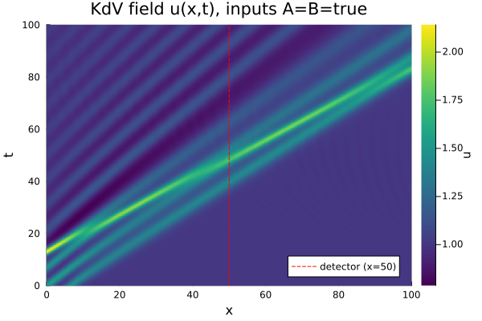

A hydrodynamic reservoir: solitons in the Korteweg-de Vries equation
(Marcucci et al., 2023) proposes Aqua-PACMANN, a reservoir computer whose "reservoir" is a solitary wave (soliton) on shallow water: two small input waves are launched at a fixed soliton, the resulting collision reshapes the wave field in an input-dependent way, and a linear readout on a handful of water-height samples recovers a Boolean logic gate. The whole system — reservoir, input encoding, and readout — is governed by the Korteweg-de Vries (KdV) equation, so it can be reproduced exactly as a numerical simulation. This example builds that simulation with the same governing equation, soliton, and encoding parameters as the paper, wires it into ReservoirComputing.jl as a custom continuous-time reservoir, and trains it to reproduce their XNOR gate.
The KdV equation and its soliton
In normalized units, the KdV equation is $u_t + u u_x + \beta u_{xxx} = 0$. It admits a traveling "soliton on a pedestal": a hump of amplitude $r_1 - r_2$ sitting on a background level $r_2$, moving at speed $v = (r_1 + 2r_2)/3$ without changing shape:
\[u_s(x, t) = r_2 + (r_1 - r_2)\,\mathrm{sech}^2\!\left( \sqrt{\frac{r_1 - r_2}{12\beta}}\,(x - vt) \right)\]
This soliton is the reservoir: a single, fixed, self-sustaining wave that every input collides with. Following the paper, $\beta = 1/3$ and $(r_1, r_2) = (2, 1)$, giving $v = 4/3$.
The equation is solved pseudospectrally on a periodic domain: spatial derivatives become multiplications by $(ik)^n$ in Fourier space, and the resulting ODE for the Fourier coefficients (equivalently, for u itself via FFT/IFFT round trips) is handed to an OrdinaryDiffEq solver — this is what makes the reservoir a SciMLProblemReservoir-style layer rather than a hand-rolled time-stepper.
using ReservoirComputing
using LuxCore: setup
using SciMLBase
using DataInterpolations
using FFTW
using OrdinaryDiffEqTsit5
using LinearAlgebra
using Plots
using Random
N, Lx = 512, 200.0
x = collect(range(-50.0, 150.0; length = N + 1)[1:end - 1])
k = (2π / Lx) .* vcat(0:(N ÷ 2 - 1), 0, (-N ÷ 2 + 1):-1)
ik, ik3 = im .* k, (im .* k) .^ 3
function kdv_rhs!(du, u, p, t)
uhat = fft(u)
ux = real(ifft(p.ik .* uhat))
uxxx = real(ifft(p.ik3 .* uhat))
@. du = -u * ux - p.β * uxxx
return nothing
end
β = 1 / 3
r1, r2 = 2.0, 1.0
κ = sqrt((r1 - r2) / (12β))
v_soliton = (r1 + 2r2) / 3
soliton(xx, t) = r2 + (r1 - r2) * sech(κ * (xx - v_soliton * t))^2soliton (generic function with 1 method)Encoding two Boolean inputs as waves
Each input channel is a truncated, windowed wave: a cos² carrier at its own wavenumber, confined to a region of width l by a super-Gaussian envelope so it doesn't perturb the rest of the domain. Wavenumber picks the channel, amplitude picks its Boolean value (0 or 1/4, matching the paper). The two encoding waves plus the soliton — shifted by a delay L so it starts well to the left of the encoding region — become the initial condition:
\[u_0(x) = \underbrace{e^{-(2x/l)^8} \sum_{n=1}^{2} \epsilon_n \cos^2(k_n x)}_{\text{encoded input}} + u_s(x + L, 0)\]
L, l = 17.0, 20.0
k1, k2 = sqrt(3) / 4, 1 / 2
envelope(xx) = exp(-(2xx / l)^8)
encode(xx, ϵ1, ϵ2) = envelope(xx) * (ϵ1 * cos(k1 * xx)^2 + ϵ2 * cos(k2 * xx)^2)
build_u0(a, b) = encode.(x, 0.25a, 0.25b) .+ soliton.(x .+ L, 0.0)build_u0 (generic function with 1 method)The soliton starts at $x=-17$ moving right at $v=4/3$; a detector placed at $x_D=50$ therefore sees it cross around $t \approx 50$. Sampling the field there at four times bracketing that crossing — as in the paper, $t \in \{40, 49, 51, 60\}$ — is enough state to separate all four input combinations:
xD_idx = argmin(abs.(x .- 50.0))
times = [40.0, 49.0, 51.0, 60.0]
p = (ik = ik, ik3 = ik3, β = β)
base_prob = ODEProblem(kdv_rhs!, build_u0(0.0, 0.0), (0.0, 60.0), p)ODEProblem with uType Vector{Float64} and tType Float64. In-place: true
Non-trivial mass matrix: false
timespan: (0.0, 60.0)
u0: 512-element Vector{Float64}:
1.0000000000000187
1.0000000000000275
1.0000000000000406
1.0000000000000602
1.0000000000000888
1.0000000000001315
1.0000000000001943
1.0000000000002869
1.000000000000424
1.0000000000006268
⋮
1.0
1.0
1.0
1.0
1.0
1.0
1.0
1.0
1.0A custom continuous-time reservoir
SciMLProblemReservoir is built for reservoirs where a signal drives the ODE (p.input(t), injected from collectstates's windowed zero-order-hold of a discrete data matrix). Here the input instead selects the initial condition — each of the four truth-table rows is its own independent simulation from t=0, not a continuation of the previous row's wave field. That's exactly the case the package's developer interface anticipates: subtype AbstractSciMLProblemReservoir and implement the __collectstates hook directly, one remaked solve per input column, instead of reusing the windowed built-in.
struct KdVReservoir{U, XT, TT, AL, BU} <: AbstractSciMLProblemReservoir
prob::U
x::XT
xD_idx::Int
times::TT
alg::AL
build_u0::BU
end
function ReservoirComputing.__collectstates(
res::KdVReservoir, rc::ReservoirComputing.AbstractReservoirComputer,
data::AbstractMatrix, ps::NamedTuple, st::NamedTuple
)
n_samples, n_times = size(data, 2), length(res.times)
states = Matrix{Float64}(undef, n_times, n_samples)
for col in 1:n_samples
u0 = res.build_u0(data[1, col], data[2, col])
sol = solve(remake(res.prob; u0 = u0), res.alg;
saveat = res.times, reltol = 1.0e-8, abstol = 1.0e-10)
states[:, col] .= [sol.u[i][res.xD_idx] for i in 1:n_times]
end
return states, st
end
res = KdVReservoir(base_prob, x, xD_idx, times, Tsit5(), build_u0)
rc = ReservoirComputer(res, LinearReadout(length(times) => 2))ReservoirComputer(
reservoir = Main.KdVReservoir{SciMLBase.ODEProblem{Vector{Float64}, Tuple{Float64, Float64}, true, @NamedTuple{ik::Vector{ComplexF64}, ik3::Vector{ComplexF64}, β::Float64}, SciMLBase.ODEFunction{true, SciMLBase.AutoSpecialize, typeof(Main.kdv_rhs!), LinearAlgebra.UniformScaling{Bool}, Nothing, Nothing, Nothing, Nothing, Nothing, Nothing, Nothing, Nothing, Nothing, Nothing, Nothing, Nothing, typeof(SciMLBase.DEFAULT_OBSERVED), Nothing, Nothing, Nothing, Nothing}, Base.Pairs{Symbol, Union{}, Nothing, @NamedTuple{}}, SciMLBase.StandardODEProblem}, Vector{Float64}, Vector{Float64}, OrdinaryDiffEqTsit5.Tsit5{typeof(OrdinaryDiffEqCore.trivial_limiter!), typeof(OrdinaryDiffEqCore.trivial_limiter!), FastBroadcast.Serial}, typeof(Main.build_u0)}(SciMLBase.ODEProblem{Vector{Float64}, Tuple{Float64, Float64}, true, @NamedTuple{ik::Vector{ComplexF64}, ik3::Vector{ComplexF64}, β::Float64}, SciMLBase.ODEFunction{true, SciMLBase.AutoSpecialize, typeof(Main.kdv_rhs!), LinearAlgebra.UniformScaling{Bool}, Nothing, Nothing, Nothing, Nothing, Nothing, Nothing, Nothing, Nothing, Nothing, Nothing, Nothing, Nothing, typeof(SciMLBase.DEFAULT_OBSERVED), Nothing, Nothing, Nothing, Nothing}, Base.Pairs{Symbol, Union{}, Nothing, @NamedTuple{}}, SciMLBase.StandardODEProblem}(SciMLBase.ODEFunction{true, SciMLBase.AutoSpecialize, typeof(Main.kdv_rhs!), LinearAlgebra.UniformScaling{Bool}, Nothing, Nothing, Nothing, Nothing, Nothing, Nothing, Nothing, Nothing, Nothing, Nothing, Nothing, Nothing, typeof(SciMLBase.DEFAULT_OBSERVED), Nothing, Nothing, Nothing, Nothing}(Main.kdv_rhs!, LinearAlgebra.UniformScaling{Bool}(true), nothing, nothing, nothing, nothing, nothing, nothing, nothing, nothing, nothing, nothing, nothing, nothing, SciMLBase.DEFAULT_OBSERVED, nothing, nothing, nothing, nothing), [1.0000000000000187, 1.0000000000000275, 1.0000000000000406, 1.0000000000000602, 1.0000000000000888, 1.0000000000001315, 1.0000000000001943, 1.0000000000002869, 1.000000000000424, 1.0000000000006268 … 1.0, 1.0, 1.0, 1.0, 1.0, 1.0, 1.0, 1.0, 1.0, 1.0], (0.0, 60.0), (ik = ComplexF64[0.0 + 0.0im, 0.0 + 0.031415926535897934im, 0.0 + 0.06283185307179587im, 0.0 + 0.0942477796076938im, 0.0 + 0.12566370614359174im, 0.0 + 0.15707963267948966im, 0.0 + 0.1884955592153876im, 0.0 + 0.21991148575128555im, 0.0 + 0.25132741228718347im, 0.0 + 0.2827433388230814im … -0.0 - 0.3141592653589793im, -0.0 - 0.2827433388230814im, -0.0 - 0.25132741228718347im, -0.0 - 0.21991148575128555im, -0.0 - 0.1884955592153876im, -0.0 - 0.15707963267948966im, -0.0 - 0.12566370614359174im, -0.0 - 0.0942477796076938im, -0.0 - 0.06283185307179587im, -0.0 - 0.031415926535897934im], ik3 = ComplexF64[0.0 + 0.0im, -0.0 - 3.100627668029982e-5im, -0.0 - 0.00024805021344239856im, -0.0 - 0.0008371694703680952im, -0.0 - 0.0019844017075391885im, -0.0 - 0.003875784585037477im, -0.0 - 0.0066973557629447615im, -0.0 - 0.010635152901342843im, -0.0 - 0.015875213660313508im, -0.0 - 0.022603575699938566im … 0.0 + 0.031006276680299816im, 0.0 + 0.022603575699938566im, 0.0 + 0.015875213660313508im, 0.0 + 0.010635152901342843im, 0.0 + 0.0066973557629447615im, 0.0 + 0.003875784585037477im, 0.0 + 0.0019844017075391885im, 0.0 + 0.0008371694703680952im, 0.0 + 0.00024805021344239856im, 0.0 + 3.100627668029982e-5im], β = 0.3333333333333333), Base.Pairs{Symbol, Union{}, Nothing, @NamedTuple{}}(), SciMLBase.StandardODEProblem()), [-50.0, -49.609375, -49.21875, -48.828125, -48.4375, -48.046875, -47.65625, -47.265625, -46.875, -46.484375 … 146.09375, 146.484375, 146.875, 147.265625, 147.65625, 148.046875, 148.4375, 148.828125, 149.21875, 149.609375], 257, [40.0, 49.0, 51.0, 60.0], OrdinaryDiffEqTsit5.Tsit5{typeof(OrdinaryDiffEqCore.trivial_limiter!), typeof(OrdinaryDiffEqCore.trivial_limiter!), FastBroadcast.Serial}(OrdinaryDiffEqCore.trivial_limiter!, OrdinaryDiffEqCore.trivial_limiter!, FastBroadcast.Serial()), Main.build_u0),
state_modifiers = (),
readout = LinearReadout(4 => 2, use_bias=false, include_collect=true)
)initialparameters/initialstates for res fall back to the empty NamedTuple AbstractSciMLProblemReservoir already provides — KdVReservoir carries no trainable parameters of its own, only the fixed physical setup above.
Training the XNOR gate
data holds the two raw Boolean inputs per column; target is the one-hot XNOR truth table (false = (1,0), true = (0,1), matching the paper). Fitting the readout is then a single call to train with no regularization — the paper's readout is the exact Moore-Penrose pseudoinverse of the response matrix, i.e. plain least squares:
rng = MersenneTwister(0)
ps, st = setup(rng, rc)
data = [0.0 0.0 1.0 1.0; 0.0 1.0 0.0 1.0] # rows: input A, input B
xnor_onehot(a, b) = (a == b) ? [0.0, 1.0] : [1.0, 0.0]
target = reduce(hcat, [xnor_onehot(data[1, i], data[2, i]) for i in 1:4])
ps, st = train(rc, data, target, ps, st; objective = RidgeRegression(0.0))((reservoir = NamedTuple(), state_modifiers = (), readout = (weight = [-2.829361865534997 1.1853555788966268 -1.5442536171272667 3.7691439660680346; 2.9476285326779452 -0.9573860525595458 1.805411831457411 -3.7037799111229615],)), (reservoir = NamedTuple(), state_modifiers = (), readout = NamedTuple()))Results
states, _ = collectstates(rc, data, ps, st)
pred, _ = predict(rc, data, ps, st)
println("response matrix (water height at the 4 sample times, per input):")
display(states)
println("\ndet(response matrix) = ", det(states))
println("\nmax |prediction - target| = ", maximum(abs.(pred .- target)))response matrix (water height at the 4 sample times, per input):
det(response matrix) = -0.010705256324566688
max |prediction - target| = 1.5543122344752192e-15The response matrix is nonsingular — the four inputs really do land at four linearly independent points in state space — with a determinant of about -0.011, closely matching the paper's reported -0.0115 and a good sign that this simulation reproduces their setup faithfully. The fit recovers the truth table to numerical precision, since the readout is an exact (noiseless) linear solve of a square, invertible system.
A picture of one collision makes the mechanism concrete: the soliton approaches from the left, passes through the encoding wave sitting near $x=0$, and the collision leaves a wake that the detector (dashed line) samples on its way past:
Axes and ranges follow the paper's own spacetime figure: x horizontal, t vertical, both spanning 0 to 100 (so the solve below runs past the last detection time, $t=60$, purely to fill out that window):
u0_11 = build_u0(1.0, 1.0)
sol_11 = solve(remake(base_prob; u0 = u0_11, tspan = (0.0, 100.0)), Tsit5();
reltol = 1.0e-8, abstol = 1.0e-10, saveat = 0:0.5:100)
U = reduce(hcat, sol_11.u)
hm = heatmap(x, sol_11.t, U'; xlabel = "x", ylabel = "t", color = :viridis,
title = "KdV field u(x,t), inputs A=B=true", colorbar_title = "u",
xlims = (0, 100), ylims = (0, 100))
vline!(hm, [50.0]; color = :red, linestyle = :dash, label = "detector (x=50)")
The takeaway isn't that a bucket of water is a practical logic gate — it's that AbstractSciMLProblemReservoir plugs into any dynamics OrdinaryDiffEq can integrate, physical or not, as long as its __collectstates hook maps inputs to features the way that system's task actually requires.